Súper fácil, paso por paso, con pantallas reales de la app y el punto exacto dónde picar 🔴
Escribe tu correo (el que te dio dirección).
Escribe tu contraseña.
Toca Entrar. Listo — la app te lleva al inicio.
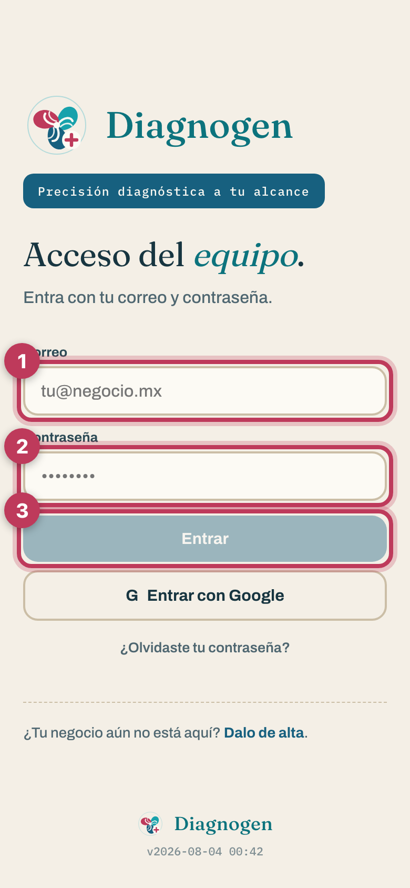
Desde el inicio, toca Nueva Venta:
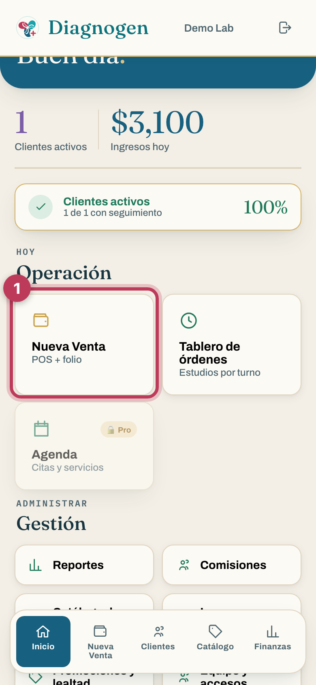
Búscalo por nombre, apellidos o teléfono. Si ya vino antes, aparece — tócalo y ya.
Si es nuevo, toca + Nuevo paciente.
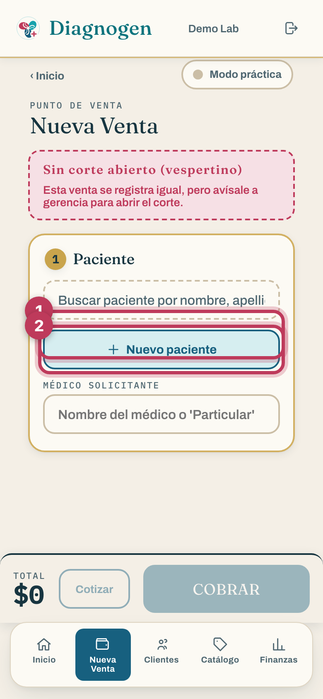
En el alta solo son obligatorios: nombre, apellidos, fecha de nacimiento y sexo. El teléfono es opcional, pero ponlo: con él se le manda el resultado por WhatsApp.
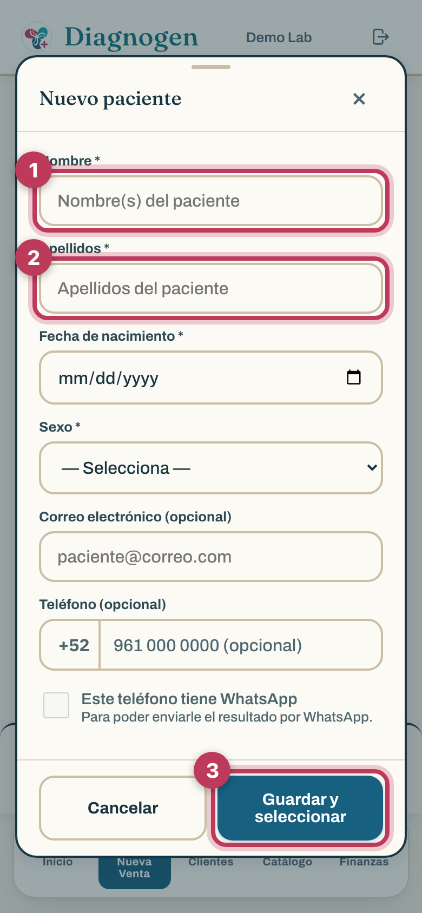
Escribe el nombre del médico solicitante — o "Particular" si viene por su cuenta. Sin esto no se puede cobrar.
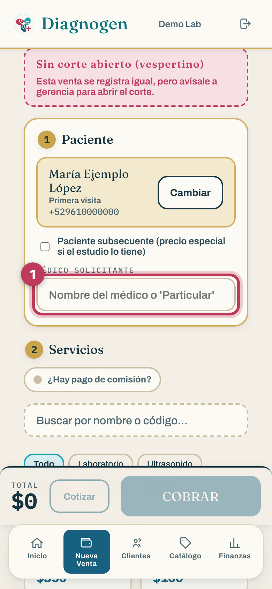
Filtra por área (Laboratorio, Ultrasonido, Rayos X…) o busca por nombre.
Toca el estudio y se agrega. Tócalo otra vez para sumar cantidad.
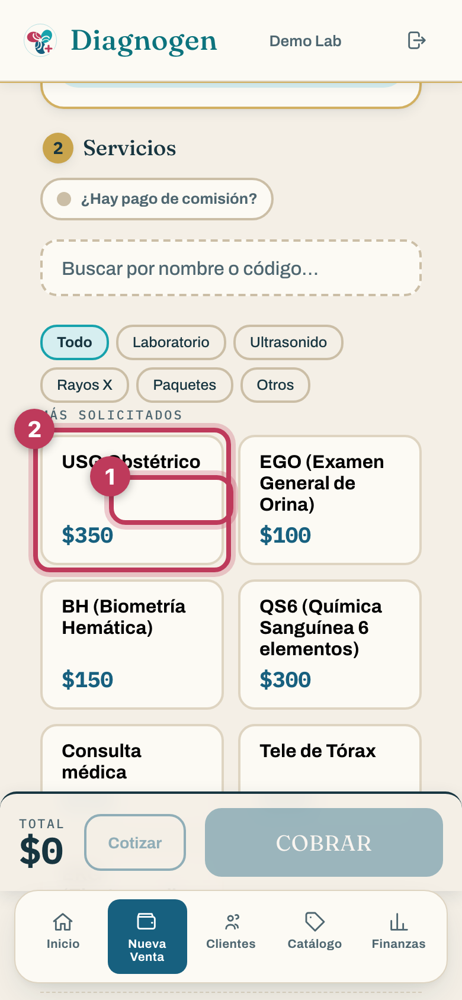
Revisa el total, elige el método de pago y toca COBRAR. La orden queda registrada con su folio (A-1, A-2…).
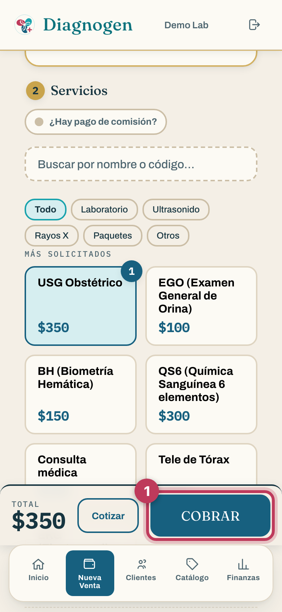
Al cobrar sale el recibo con todo lo que puedes hacer en un toque:
Enviar comprobante por WhatsApp — el ticket bonito en PDF, directo al chat del paciente.
Enviar nota al paciente — sus estudios y cuándo se entregan.
Otra venta — y a seguir con la fila.
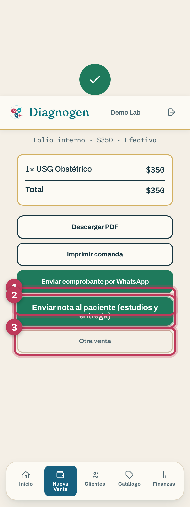
Inicio → Tablero de órdenes. Cada orden es una tarjeta que avanza por columnas: Recibidas → En proceso → Resultados listos → Entregadas.
Cuando el área empieza a trabajar un estudio, toca Comenzar ›. Cuando termina y sube el estudio, toca Listo ›.
Detalle › abre todo lo demás: la comanda, subir el estudio, capturar resultados.
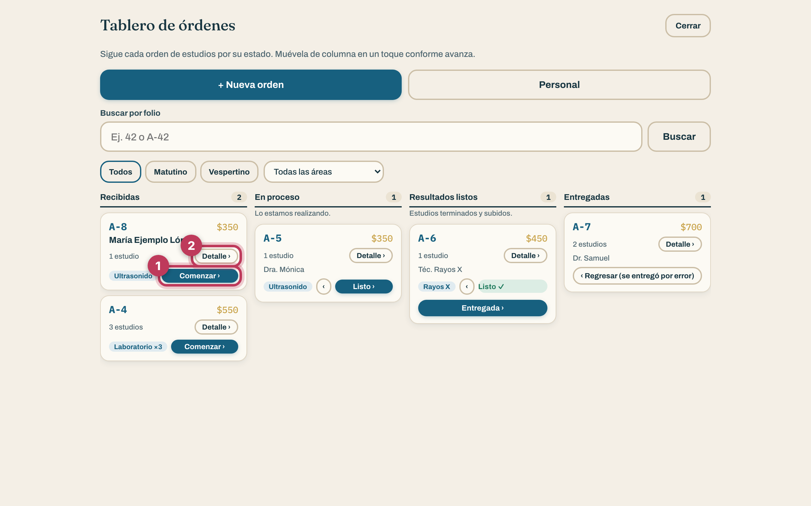
En el tablero, toca Detalle › de la orden:
Toca Subir estudio / capturar resultados.
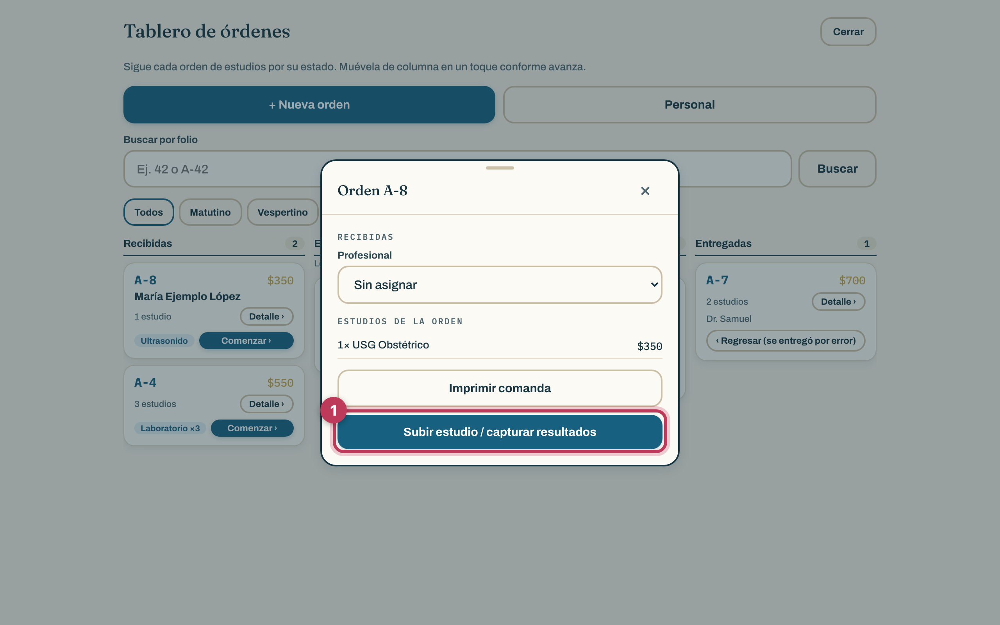
Por cada estudio de la orden puedes:
Subir el archivo tal cual se entrega (PDF, Word, Excel o foto) — o pegar el enlace si el estudio se ve en un visor (típico de rayos X).
La doctora encargada toca Validar (firma el resultado). Sin estudio subido, la app no deja marcar "Listo".
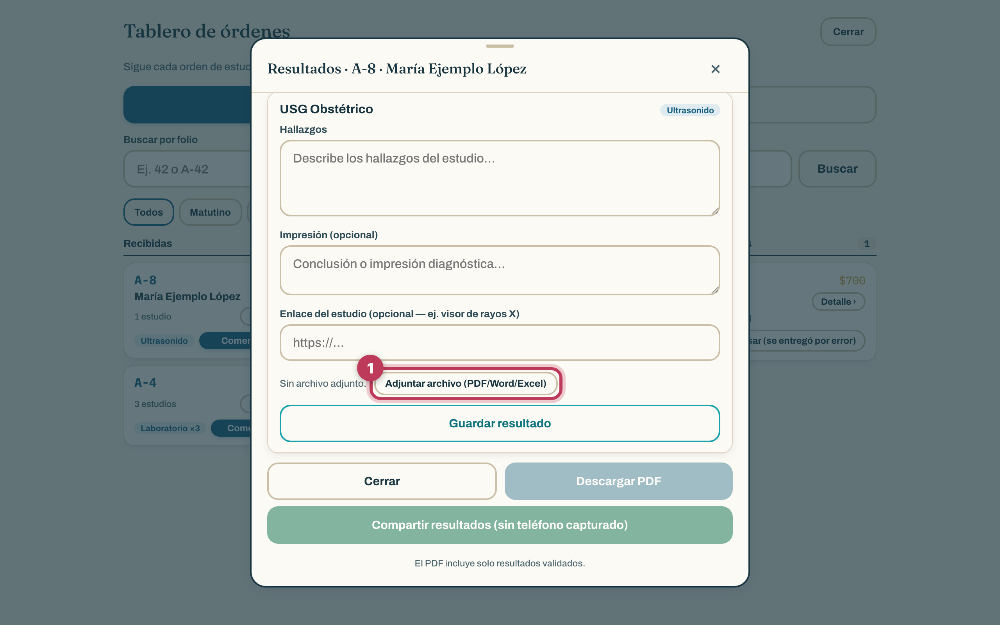
Cuando todos los estudios están validados aparece "Enviar TODO al paciente por WhatsApp": le llegan sus resultados y la orden queda Entregada sola.
Arma el carrito igual que una venta, pero en vez de COBRAR toca Cotizar:
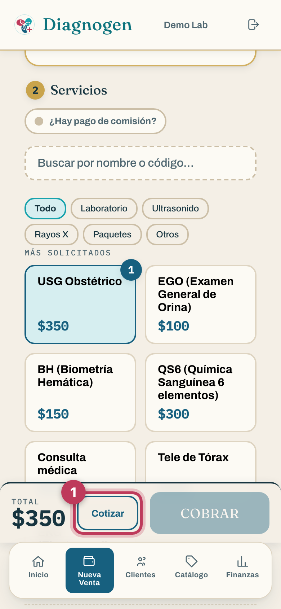
Enviar por WhatsApp — si el paciente tiene número registrado.
Descargar PDF — la cotización bonita con la imagen de cada área.
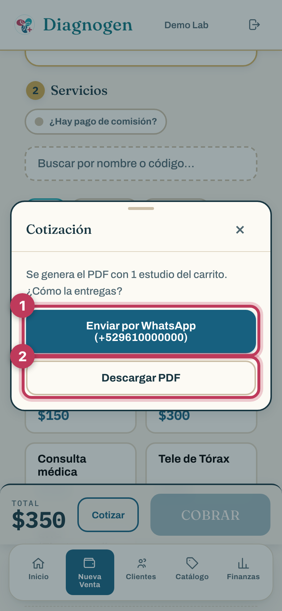
Si un estudio tiene precio subsecuente en el catálogo, los pacientes que ya vinieron antes pagan ese precio en su segunda visita en adelante.
No tienes que acordarte: al elegir al paciente, la app revisa su historial y marca sola la casilla "Paciente subsecuente" con el aviso "Detectado en automático". Puedes quitarla si no aplica. El sistema siempre re-verifica antes de cobrar: si es primera visita, cobra precio de lista aunque la casilla esté marcada.
Inicio → Catálogo de estudios. Busca por nombre, alias o clave; filtra por área.
Editar: precio, precio subsecuente, tiempo de entrega, alias (las 6 formas de escribir "USG obstétrico").
Activo/Inactivo: desactivar lo quita de la caja SIN borrar su historia. Dentro de Editar también está Eliminar — pero si el estudio ya tiene ventas, la app lo protege y te sugiere desactivarlo.
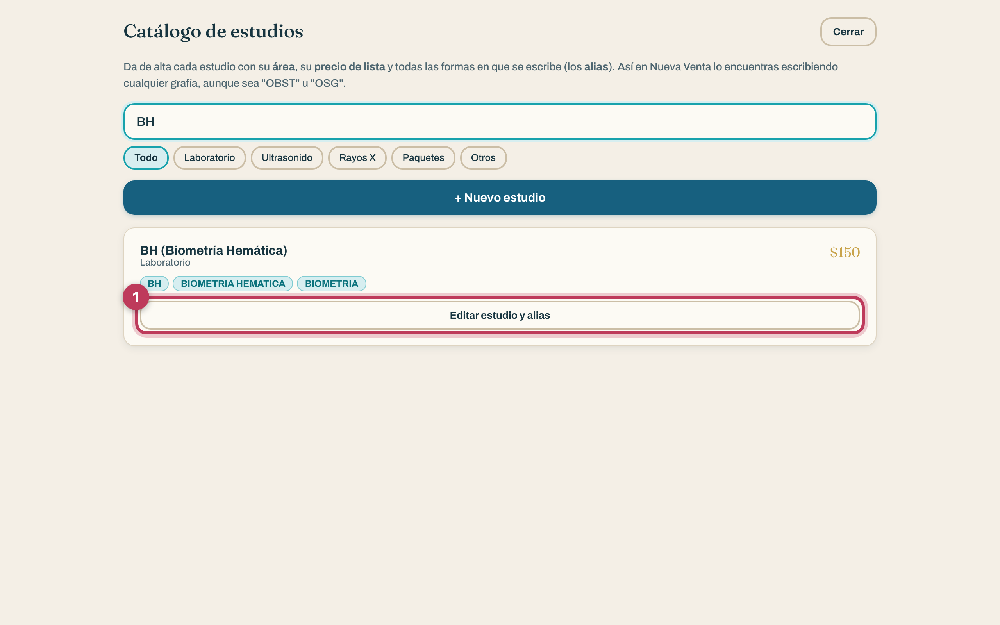
Inicio → Equipo y accesos. Aquí dirección da de alta a cada persona con su correo, contraseña y —lo importante— su área:
| Rol / área | Qué puede |
|---|---|
| Dirección (gerencia) | Todo: precios, descuentos, reportes, panel, validar resultados. |
| Recepción (sin área) | Cobra, mueve órdenes de cualquier área, entrega. No ve dinero de reportes ni da descuentos. |
| Con área (lab / rayos X / USG) | Solo toca los estudios de SU área: los comienza, sube el estudio y los marca listos. No entrega órdenes. |
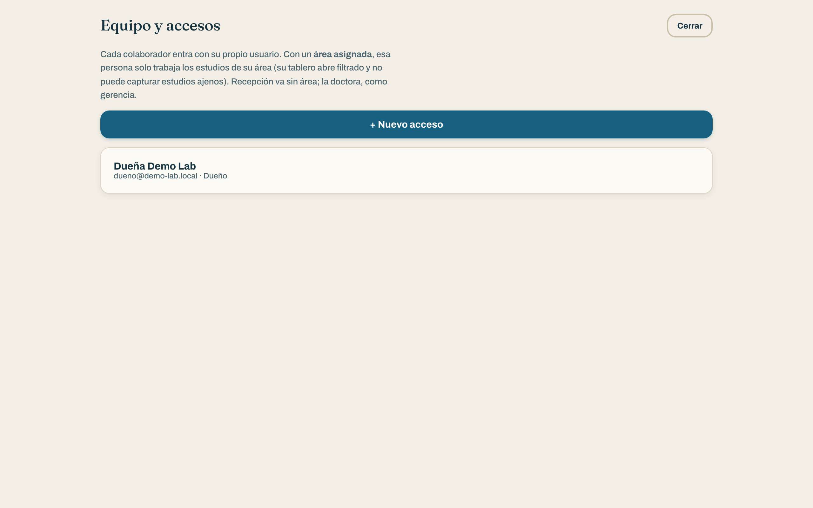
Inicio → Promociones y lealtad (solo dirección). Ahí viven:
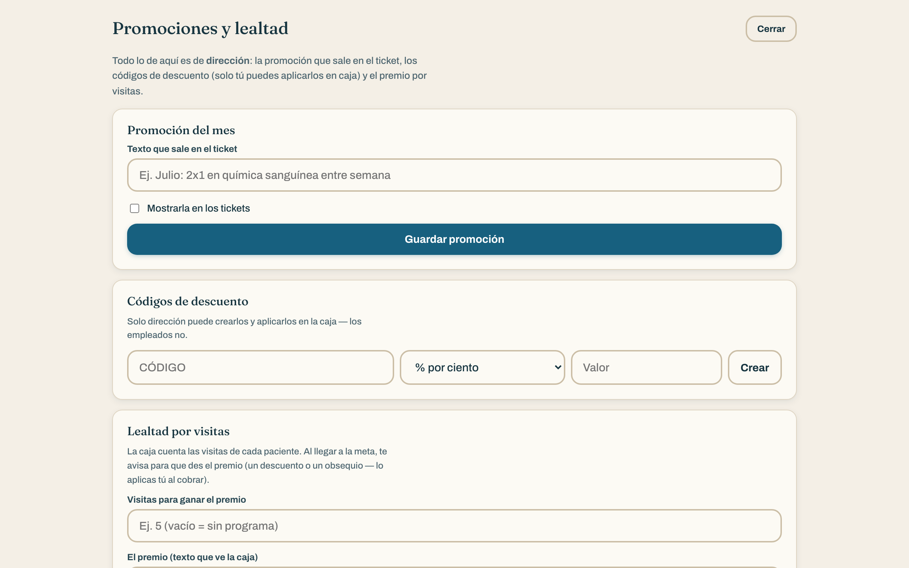
Al final del mismo panel está "Estudios: espacio y respaldo". La nube guarda los estudios del día a día; la copia de largo plazo va en la computadora del negocio (la ley pide conservar resultados mínimo 5 años).
Elige el rango (por ejemplo, el mes pasado) y toca Ver qué hay → Descargar respaldo: baja un ZIP con los estudios ya entregados y su índice.
Copia el ZIP a una USB o disco externo (segunda copia), palomea la casilla y toca Liberar espacio. La nube se vacía; el registro de cada estudio se conserva.
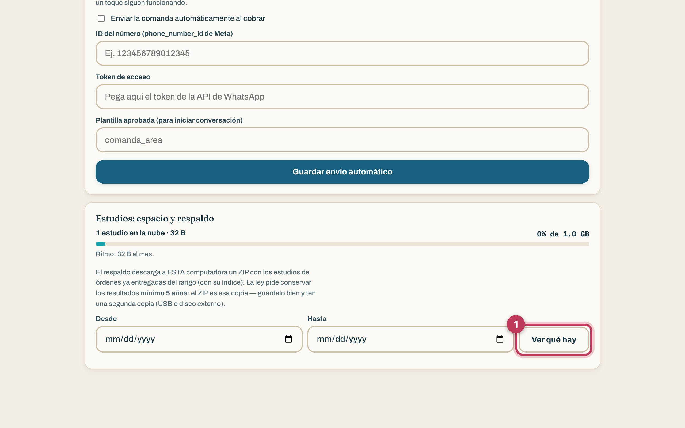
La pestaña Finanzas (abajo) concentra ingresos, egresos y el corte por turno: se abre el turno, se cobra el día, y al cerrar el corte la app cuadra lo cobrado por método de pago. Los reportes del dinero completo son de dirección.
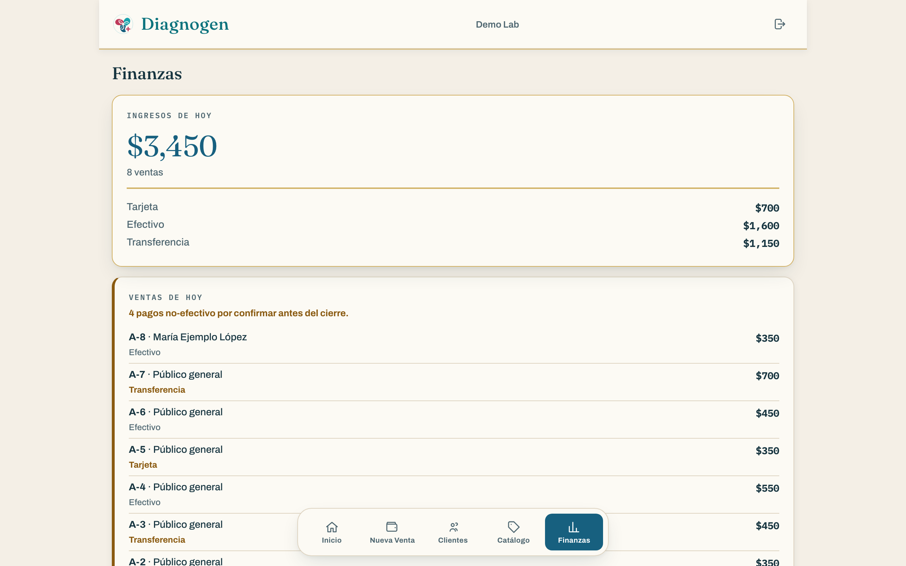
En Nueva Venta, arriba a la derecha está el interruptor Modo práctica. Con él encendido puedes cobrar de mentiritas: esas ventas no entran al corte ni a los reportes. Perfecto para entrenar a alguien nuevo. Apágalo para trabajar de verdad.
| Situación | Qué hacer |
|---|---|
| Me equivoqué de estudio antes de cobrar | Toca el − del estudio en el carrito y quítalo. Nada quedó registrado hasta que se cobra. |
| Marqué una orden como Entregada por error | En la columna Entregadas, toca ‹ Regresar (se entregó por error). |
| No encuentro al paciente | Busca por TELÉFONO (es lo más seguro). Si de plano no está, dala de alta — la app avisa si se parece a alguien ya registrado. |
| No aparece un estudio en la caja | Busca por sus otras formas de escribirlo (alias) o revisa en el Catálogo que esté Activo. |
| Sale "Sin corte abierto" | La venta se registra igual — solo avísale a gerencia para abrir el corte del turno. |
| La app no deja marcar "Listo" | Primero hay que subir el estudio: Detalle › Subir estudio / capturar resultados. |
| "Ese estudio es de otra área" | Cada quien mueve solo lo suyo. Recepción o dirección pueden mover cualquier área. |
| Un paciente pide un estudio de hace meses | Si ya no está en la nube, está en el ZIP de respaldo de la computadora del negocio (búscalo por folio en el índice del ZIP). |
| Se me cerró la sesión | Vuelve a entrar con tu correo y contraseña. Lo cobrado no se pierde. |
| No hay internet | La caja guarda la venta y la manda sola cuando regresa la conexión. |
Diagnogen POS · Manual de uso · Las pantallas son de la app real (datos de demostración).
¿Buscabas el manual de pruebas del sistema? Está en pruebas.html.